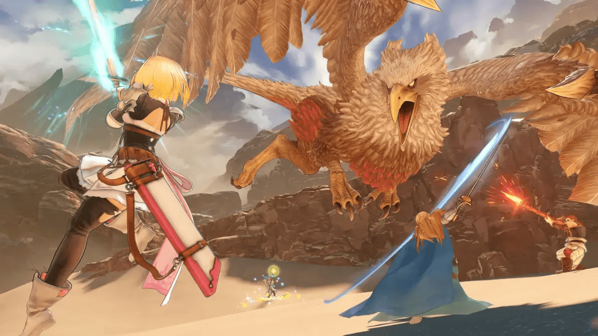
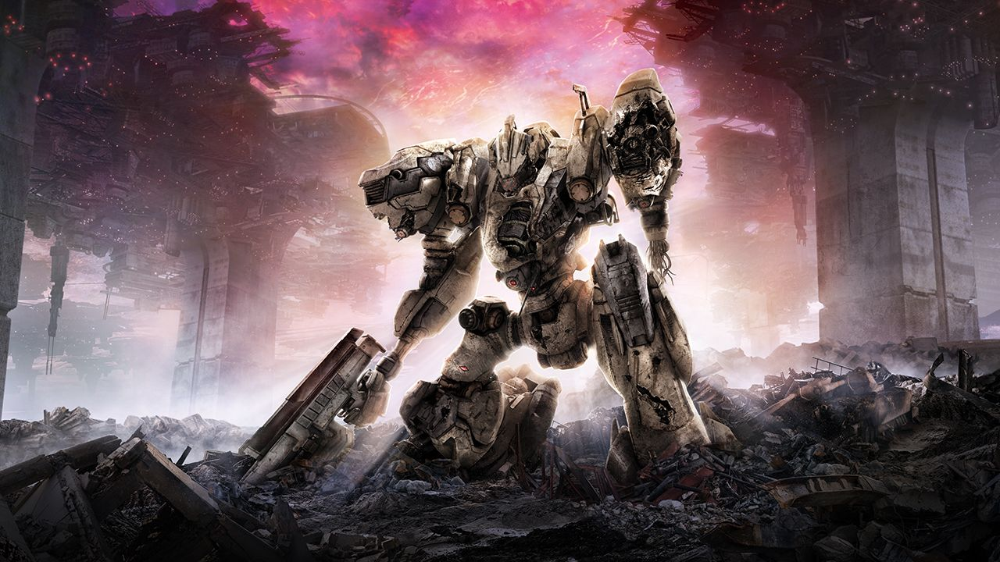

Granblue Fantasy: Relink
Dikembangkan oleh Cygames, Granblue Fantasy: Relink adalah game action RPG yang dirilis pada 1 Februari 2024. Game ini menawarkan dunia fantasi yang luas dengan grafis memukau dan sistem pertarungan yang dinamis. Pemain dapat menjelajahi berbagai area, menghadapi musuh yang menantang, dan bekerja sama dengan karakter lain untuk menyelesaikan misi. Kombinasi antara cerita yang mendalam dan gameplay yang seru menjadikan game ini salah satu yang terbaik di genre-nya.
Remnant 2

Remnant 2, dirilis pada 25 Juli 2023 oleh Gunfire Games, adalah sekuel dari Remnant: From the Ashes. Game ini menggabungkan elemen shooter dengan mekanik RPG, memungkinkan pemain untuk menghadapi dunia yang dihasilkan secara prosedural dengan berbagai musuh dan tantangan unik. Fitur co-op memungkinkan hingga tiga pemain bekerja sama, menambah kedalaman strategi dalam pertarungan. Dengan peningkatan grafis dan gameplay yang lebih halus, Remnant 2 menawarkan pengalaman bermain yang mendalam dan menantang.
Armored Core VI: Fires of Rubicon
Dikembangkan oleh FromSoftware, Armored Core VI: Fires of Rubicon dirilis pada 24 Agustus 2023. Game ini menandai kembalinya seri Armored Core dengan fokus pada pertempuran mecha yang intens. Pemain dapat menyesuaikan mecha mereka dengan berbagai senjata dan komponen, memungkinkan strategi yang beragam dalam pertempuran. Dengan grafis yang ditingkatkan dan gameplay yang lebih halus, game ini menawarkan pengalaman aksi yang mendalam bagi penggemar mecha dan game aksi.